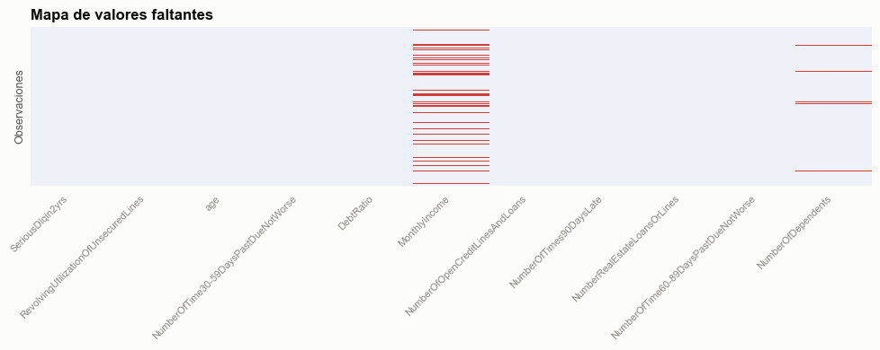
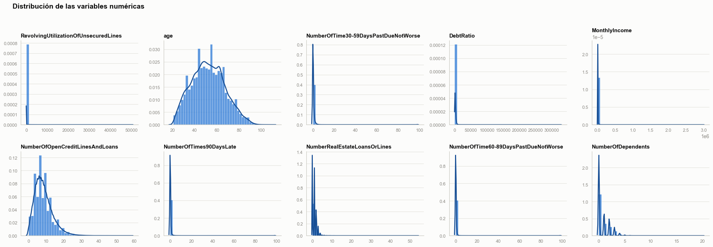
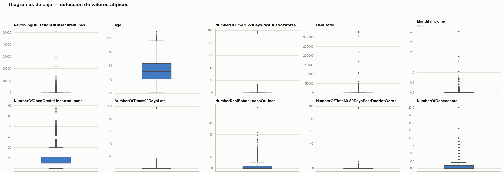
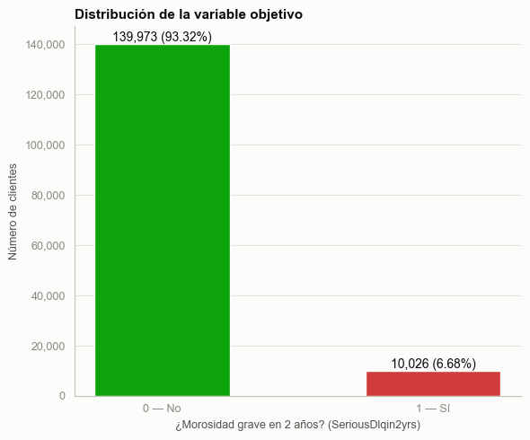
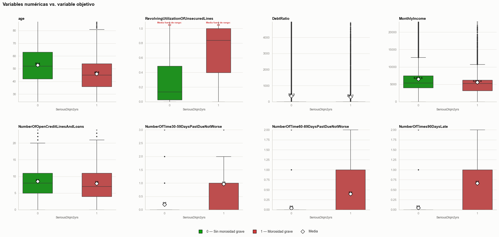
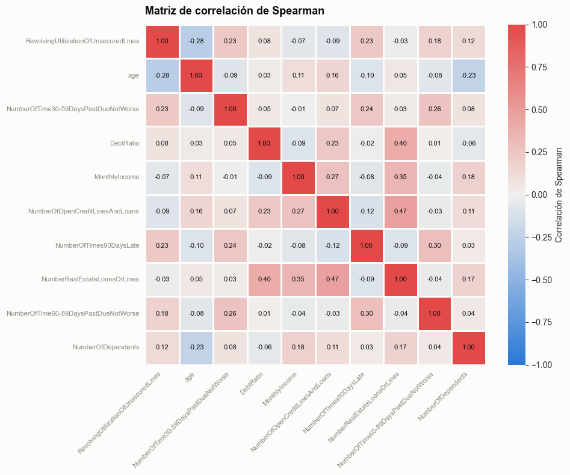
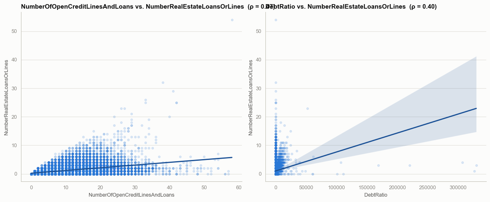

Análisis Exploratorio de Datos (EDA) — Give Me Some Credit#
Give Me Some Credit es un dataset de Kaggle, sacado de una competencia de predicción de riesgo crediticio. La idea es usar información financiera y de comportamiento de los clientes (edad, ingresos mensuales, número de préstamos, uso de líneas de crédito, historial de pagos, atrasos) para estimar qué tan probable es que alguien caiga en dificultades financieras.
La variable objetivo es SeriousDlqin2yrs: si el cliente presentó morosidad grave en los siguientes dos años (1) o no (0). Es clasificación binaria, así de simple.
Este EDA sigue el mismo orden de siempre: carga de librerías, estructura de los datos, univariado, bivariado, comparación de medianas con pruebas de hipótesis, y correlación entre variables.
1. Carga de librerías#
import pandas as pd
import numpy as np
import matplotlib.pyplot as plt
import matplotlib.ticker as mticker
from matplotlib.lines import Line2D
from matplotlib.colors import ListedColormap
import seaborn as sns
from scipy import stats
sns.set_style("white")
plt.rcParams["figure.facecolor"] = "#fcfcfb"
plt.rcParams["axes.facecolor"] = "#fcfcfb"
plt.rcParams["font.family"] = "sans-serif"
# Paleta de colores para visualizaciones:
# - estado bueno/malo para el target binario (el color SÍ representa un estado: sin/con morosidad grave)
# - azul de serie única para distribuciones generales (univariado)
# - par divergente azul-rojo con punto medio gris para correlaciones
COLOR_GOOD = "#0ca30c" # SeriousDlqin2yrs = 0
COLOR_CRITICAL = "#d03b3b" # SeriousDlqin2yrs = 1
COLOR_SEQ = "#2a78d6"
COLOR_SEQ_DARK = "#184f95"
DIVERGE_LOW, DIVERGE_MID, DIVERGE_HIGH = "#2a78d6", "#f0efec", "#e34948"
GRID_COLOR, AXIS_COLOR, MUTED_TEXT, SECONDARY_TEXT, PRIMARY_TEXT = (
"#e1e0d9", "#c3c2b7", "#898781", "#52514e", "#0b0b0b"
)
# Función para aplicar estilo consistente a los ejes de los gráficos
def style_ax(ax, title=None, xlabel=None, ylabel=None):
"""Aplica el estilo consistente (spines, grid, tipografía) usado en todo el notebook."""
ax.spines["top"].set_visible(False)
ax.spines["right"].set_visible(False)
ax.spines["left"].set_color(AXIS_COLOR)
ax.spines["bottom"].set_color(AXIS_COLOR)
ax.tick_params(colors=MUTED_TEXT, labelsize=9)
ax.yaxis.grid(True, color=GRID_COLOR, linewidth=0.8, zorder=0)
ax.set_axisbelow(True)
if title:
ax.set_title(title, fontsize=11, color=PRIMARY_TEXT, fontweight="bold", loc="left")
if xlabel:
ax.set_xlabel(xlabel, fontsize=9, color=SECONDARY_TEXT)
if ylabel:
ax.set_ylabel(ylabel, fontsize=9, color=SECONDARY_TEXT)
return ax
%pip install xlrd # Instala las dependencias necesarias
Note: you may need to restart the kernel to use updated packages.
ERROR: Invalid requirement: '#': Expected package name at the start of dependency specifier
#
^
Para graficar uso solo matplotlib y seaborn, con pandas/numpy de soporte para el manejo de datos. El mapa de valores faltantes de la sección 2.3, por ejemplo, sale directo de seaborn.heatmap.
scipy.stats se usa para los diagnósticos descriptivos de forma (asimetría, curtosis) y para Mann-Whitney U en la sección 5. Ya no se usan pruebas formales de normalidad (Kolmogorov-Smirnov, Shapiro-Wilk, Lilliefors): con N ≈ 150,000 esas pruebas sufren de exceso de potencia y no aportan nada útil — ver la nota metodológica al inicio de la sección 5.
Diccionario de variables#
Carga directa el diccionario oficial de Kaggle (data/Data Dictionary.xls).
diccionario = pd.read_excel("data/Data Dictionary.xls", sheet_name="Sheet1", skiprows=1)
diccionario.columns = ["Variable", "Descripción", "Tipo"]
(
diccionario.style
.hide(axis="index")
.set_caption("Diccionario de variables — Kaggle Data Dictionary (GiveMeSomeCredit)")
)
| Variable | Descripción | Tipo |
|---|---|---|
| SeriousDlqin2yrs | Person experienced 90 days past due delinquency or worse | Y/N |
| RevolvingUtilizationOfUnsecuredLines | Total balance on credit cards and personal lines of credit except real estate and no installment debt like car loans divided by the sum of credit limits | percentage |
| age | Age of borrower in years | integer |
| NumberOfTime30-59DaysPastDueNotWorse | Number of times borrower has been 30-59 days past due but no worse in the last 2 years. | integer |
| DebtRatio | Monthly debt payments, alimony,living costs divided by monthy gross income | percentage |
| MonthlyIncome | Monthly income | real |
| NumberOfOpenCreditLinesAndLoans | Number of Open loans (installment like car loan or mortgage) and Lines of credit (e.g. credit cards) | integer |
| NumberOfTimes90DaysLate | Number of times borrower has been 90 days or more past due. | integer |
| NumberRealEstateLoansOrLines | Number of mortgage and real estate loans including home equity lines of credit | integer |
| NumberOfTime60-89DaysPastDueNotWorse | Number of times borrower has been 60-89 days past due but no worse in the last 2 years. | integer |
| NumberOfDependents | Number of dependents in family excluding themselves (spouse, children etc.) | integer |
2. Carga y estructura de los datos#
2.1 Lectura y dimensiones#
df = pd.read_csv(r"data/cs-training.csv", index_col=0)
print(f"El dataset cuenta con {df.shape[0]:,} filas y {df.shape[1]} columnas")
df.head()
El dataset cuenta con 150,000 filas y 11 columnas
| SeriousDlqin2yrs | RevolvingUtilizationOfUnsecuredLines | age | NumberOfTime30-59DaysPastDueNotWorse | DebtRatio | MonthlyIncome | NumberOfOpenCreditLinesAndLoans | NumberOfTimes90DaysLate | NumberRealEstateLoansOrLines | NumberOfTime60-89DaysPastDueNotWorse | NumberOfDependents | |
|---|---|---|---|---|---|---|---|---|---|---|---|
| 1 | 1 | 0.766127 | 45 | 2 | 0.802982 | 9120.0 | 13 | 0 | 6 | 0 | 2.0 |
| 2 | 0 | 0.957151 | 40 | 0 | 0.121876 | 2600.0 | 4 | 0 | 0 | 0 | 1.0 |
| 3 | 0 | 0.658180 | 38 | 1 | 0.085113 | 3042.0 | 2 | 1 | 0 | 0 | 0.0 |
| 4 | 0 | 0.233810 | 30 | 0 | 0.036050 | 3300.0 | 5 | 0 | 0 | 0 | 0.0 |
| 5 | 0 | 0.907239 | 49 | 1 | 0.024926 | 63588.0 | 7 | 0 | 1 | 0 | 0.0 |
df.info()
<class 'pandas.core.frame.DataFrame'>
Index: 150000 entries, 1 to 150000
Data columns (total 11 columns):
# Column Non-Null Count Dtype
--- ------ -------------- -----
0 SeriousDlqin2yrs 150000 non-null int64
1 RevolvingUtilizationOfUnsecuredLines 150000 non-null float64
2 age 150000 non-null int64
3 NumberOfTime30-59DaysPastDueNotWorse 150000 non-null int64
4 DebtRatio 150000 non-null float64
5 MonthlyIncome 120269 non-null float64
6 NumberOfOpenCreditLinesAndLoans 150000 non-null int64
7 NumberOfTimes90DaysLate 150000 non-null int64
8 NumberRealEstateLoansOrLines 150000 non-null int64
9 NumberOfTime60-89DaysPastDueNotWorse 150000 non-null int64
10 NumberOfDependents 146076 non-null float64
dtypes: float64(4), int64(7)
memory usage: 13.7 MB
2.2 Tipado de variables#
SeriousDlqin2yrs es la variable objetivo, binaria (0 = sin morosidad grave, 1 = con morosidad grave). Es una etiqueta de clase, no una magnitud continua, así que la convierto a category sin orden — al fin y al cabo es binaria — para que su naturaleza categórica quede explícita en el tipo de dato.
df["SeriousDlqin2yrs"] = df["SeriousDlqin2yrs"].astype("category")
df["SeriousDlqin2yrs"].cat.categories
Index([0, 1], dtype='int64')
2.3 Valores faltantes#
faltantes = df.isnull().sum().to_frame("n_faltantes")
faltantes["pct_faltantes"] = round(faltantes["n_faltantes"] / len(df) * 100, 2)
faltantes[faltantes["n_faltantes"] > 0]
| n_faltantes | pct_faltantes | |
|---|---|---|
| MonthlyIncome | 29731 | 19.82 |
| NumberOfDependents | 3924 | 2.62 |
cmap_faltantes = ListedColormap(["#eef2f8", COLOR_CRITICAL])
fig, ax = plt.subplots(figsize=(10, 4))
sns.heatmap(df.isnull(), cbar=False, cmap=cmap_faltantes, ax=ax)
ax.set_title("Mapa de valores faltantes", fontsize=12, color=PRIMARY_TEXT, fontweight="bold", loc="left")
ax.set_ylabel("Observaciones", fontsize=9, color=SECONDARY_TEXT)
ax.set_yticks([])
ax.tick_params(axis="x", colors=MUTED_TEXT, labelsize=8)
plt.setp(ax.get_xticklabels(), rotation=45, ha="right")
plt.tight_layout()
plt.show()

El mapa de valores faltantes deja ver que casi todo el dataset está completo. Solo dos variables tienen nulos: MonthlyIncome, con un porcentaje considerable, y NumberOfDependents, con uno bajo. MonthlyIncome es clave para medir capacidad de pago y riesgo crediticio, así que eliminarla no es opción — voy a imputar con la mediana, porque los ingresos suelen venir con distribución asimétrica y ahí la mediana aguanta mejor los extremos que la media. NumberOfDependents tiene pocos nulos, pero por consistencia la imputo igual con mediana.
Antes de imputar MonthlyIncome, guardo un indicador (ingreso_no_reportado) de qué filas tenían el ingreso faltante. La imputación por mediana resuelve el problema de tener un valor numérico para modelar, pero no resuelve un problema distinto que aparece en la sección 3.4: para esas mismas filas, DebtRatio no se comporta como una razón (deuda/ingreso) sino como una cifra de deuda absoluta, precisamente porque el ingreso original no estaba disponible para calcularla como razón. El indicador permite documentar y tratar ese fenómeno explícitamente más adelante, en vez de dejar que la imputación oculte la causa.
# Flag ANTES de imputar: en la sección 3.4 se usa para explicar por qué DebtRatio > 1
# se concentra en los registros donde el ingreso no fue reportado.
df["ingreso_no_reportado"] = df["MonthlyIncome"].isna()
df["MonthlyIncome"] = df["MonthlyIncome"].fillna(df["MonthlyIncome"].median())
df["NumberOfDependents"] = df["NumberOfDependents"].fillna(df["NumberOfDependents"].median())
Corrección de age == 0: en la sección 3.3 apareció un registro con age == 0. Lo elimino aquí, antes de seguir, con esta justificación formal:
Es lógicamente imposible dentro del dominio del negocio. Nadie de 0 años solicita ni mantiene una línea de crédito, un historial de pagos o una calificación de riesgo — los productos financieros que describe este dataset (líneas revolventes, préstamos, hipotecas) requieren mayoría de edad legal.
age == 0no es un valor extremo válido, es un error de captura.El costo de eliminarlo es despreciable. Es 1 fila de 150,000 (0.00067%). Ni el tamaño muestral ni la representatividad del dataset se ven afectados.
El costo de NO eliminarlo es alto. Si se deja, distorsiona la media y el mínimo de
ageen los estadísticos descriptivos (3.1), sesga el eje de los histogramas y diagramas de caja (3.2–3.3) y, más importante, puede alterar artificialmente los diagnósticos de forma y las pruebas de Mann-Whitney de la sección 5: un valor tan extremo (0 años, muy por fuera del rango real de 21 a 109) infla la varianza y la asimetría de forma no representativa del fenómeno que se quiere medir.
Por estas tres razones — imposibilidad lógica, costo de eliminación insignificante, riesgo de distorsión aguas abajo — el tratamiento correcto es eliminar la fila, no imputarla (no hay un valor “razonable” para reemplazar una edad de 0 años) ni tratarla como un atípico legítimo.
n_antes = len(df)
df = df.loc[df["age"] > 0].copy()
print(f"Filas eliminadas por age == 0: {n_antes - len(df)}")
print(f"Filas restantes: {len(df):,}")
Filas eliminadas por age == 0: 1
Filas restantes: 149,999
df.isnull().sum()
SeriousDlqin2yrs 0
RevolvingUtilizationOfUnsecuredLines 0
age 0
NumberOfTime30-59DaysPastDueNotWorse 0
DebtRatio 0
MonthlyIncome 0
NumberOfOpenCreditLinesAndLoans 0
NumberOfTimes90DaysLate 0
NumberRealEstateLoansOrLines 0
NumberOfTime60-89DaysPastDueNotWorse 0
NumberOfDependents 0
ingreso_no_reportado 0
dtype: int64
3. Análisis univariado#
3.1 Estadísticos descriptivos#
num_cols = [c for c in df.columns if c not in ["SeriousDlqin2yrs", "ingreso_no_reportado"]]
resumen_numericas = df[num_cols].describe().T
resumen_numericas["IQR"] = resumen_numericas["75%"] - resumen_numericas["25%"]
resumen_numericas = resumen_numericas.rename(columns={
"50%": "mediana", "25%": "Q1", "75%": "Q3", "mean": "media", "std": "ds",
"min": "minimo", "max": "maximo"
}).round(2)
resumen_numericas
| count | media | ds | minimo | Q1 | mediana | Q3 | maximo | IQR | |
|---|---|---|---|---|---|---|---|---|---|
| RevolvingUtilizationOfUnsecuredLines | 149999.0 | 6.05 | 249.76 | 0.0 | 0.03 | 0.15 | 0.56 | 50708.0 | 0.53 |
| age | 149999.0 | 52.30 | 14.77 | 21.0 | 41.00 | 52.00 | 63.00 | 109.0 | 22.00 |
| NumberOfTime30-59DaysPastDueNotWorse | 149999.0 | 0.42 | 4.19 | 0.0 | 0.00 | 0.00 | 0.00 | 98.0 | 0.00 |
| DebtRatio | 149999.0 | 353.01 | 2037.83 | 0.0 | 0.18 | 0.37 | 0.87 | 329664.0 | 0.69 |
| MonthlyIncome | 149999.0 | 6418.46 | 12890.44 | 0.0 | 3903.00 | 5400.00 | 7400.00 | 3008750.0 | 3497.00 |
| NumberOfOpenCreditLinesAndLoans | 149999.0 | 8.45 | 5.15 | 0.0 | 5.00 | 8.00 | 11.00 | 58.0 | 6.00 |
| NumberOfTimes90DaysLate | 149999.0 | 0.27 | 4.17 | 0.0 | 0.00 | 0.00 | 0.00 | 98.0 | 0.00 |
| NumberRealEstateLoansOrLines | 149999.0 | 1.02 | 1.13 | 0.0 | 0.00 | 1.00 | 2.00 | 54.0 | 2.00 |
| NumberOfTime60-89DaysPastDueNotWorse | 149999.0 | 0.24 | 4.16 | 0.0 | 0.00 | 0.00 | 0.00 | 98.0 | 0.00 |
| NumberOfDependents | 149999.0 | 0.74 | 1.11 | 0.0 | 0.00 | 0.00 | 1.00 | 20.0 | 1.00 |
3.2 Distribución de las variables numéricas#
fig, axes = plt.subplots(2, 5, figsize=(20, 7))
axes = axes.flatten()
for i, col in enumerate(num_cols):
sns.histplot(df[col], bins=40, color=COLOR_SEQ, edgecolor="white", linewidth=0.3,
stat="density", ax=axes[i])
sns.kdeplot(df[col], color=COLOR_SEQ_DARK, linewidth=2, ax=axes[i])
style_ax(axes[i], title=col)
axes[i].set_ylabel("")
axes[i].set_xlabel("")
for j in range(len(num_cols), len(axes)):
axes[j].axis("off")
fig.suptitle("Distribución de las variables numéricas", fontsize=14, color=PRIMARY_TEXT,
fontweight="bold", x=0.02, ha="left")
plt.tight_layout(rect=[0, 0, 1, 0.95])
plt.show()

La mayoría de las variables tiene una asimetría positiva marcada, cola a la derecha. Se nota especialmente en RevolvingUtilizationOfUnsecuredLines, DebtRatio y MonthlyIncome: sus histogramas amontonan casi toda la masa cerca de cero y luego arrastran una cola larga de valores extremos. age es la única que se acerca a algo simétrico. Y las tres variables de conteo de atrasos (NumberOfTime30-59, 60-89 y 90 días) concentran casi todo en cero, pero tienen un pico raro aislado en 96 y 98 — es un código de valor especial del dataset original, no un conteo real de atrasos.
diagnostico_forma_num = pd.DataFrame({
"asimetria": df[num_cols].apply(stats.skew),
"curtosis_exceso": df[num_cols].apply(stats.kurtosis),
"n_unicos": df[num_cols].nunique(),
}).round(2)
diagnostico_forma_num
| asimetria | curtosis_exceso | n_unicos | |
|---|---|---|---|
| RevolvingUtilizationOfUnsecuredLines | 97.63 | 14544.13 | 125728 |
| age | 0.19 | -0.50 | 85 |
| NumberOfTime30-59DaysPastDueNotWorse | 22.60 | 522.36 | 16 |
| DebtRatio | 95.16 | 13733.74 | 114193 |
| MonthlyIncome | 127.12 | 24260.82 | 13594 |
| NumberOfOpenCreditLinesAndLoans | 1.22 | 3.09 | 58 |
| NumberOfTimes90DaysLate | 23.09 | 537.72 | 19 |
| NumberRealEstateLoansOrLines | 3.48 | 60.48 | 28 |
| NumberOfTime60-89DaysPastDueNotWorse | 23.33 | 545.66 | 13 |
| NumberOfDependents | 1.63 | 3.14 | 13 |
La tabla cuantifica lo que el histograma sugiere visualmente, y es la base formal para descartar el supuesto de normalidad en toda la sección 5 (sin recurrir a pruebas de bondad de ajuste — ver la nota metodológica al inicio de esa sección):
Asimetría (skewness) fuertemente positiva en
RevolvingUtilizationOfUnsecuredLines(≈98),MonthlyIncome(≈127) yDebtRatio(≈95): valores muy por encima de los umbrales convencionales (|asimetría| > 1 ya se considera alta), reflejo de la cola derecha larga que se ve en los histogramas.Curtosis en exceso extrema en esas mismas variables (del orden de miles) y en las tres variables de conteo de atrasos (cientos): colas muchísimo más pesadas que una normal, con masa concentrada en un valor (típicamente 0) y unos pocos valores extremos aislados — exactamente lo que se espera de una mezcla entre un conteo discreto y un código de valor especial (96/98, tratado formalmente en 3.4).
Naturaleza discreta / de conteo:
NumberOfTime30-59DaysPastDueNotWorse,NumberOfTimes90DaysLate,NumberOfTime60-89DaysPastDueNotWorse,NumberOfOpenCreditLinesAndLoans,NumberRealEstateLoansOrLinesyNumberOfDependentstienen muy pocos valores únicos (entre 13 y 58 sobre 150,000 observaciones): son conteos enteros no negativos, no magnitudes continuas, así que un modelo de densidad normal (continua, simétrica, de soporte infinito) no describe su proceso generador por construcción, sin importar qué diga cualquier prueba formal.agees la variable más cercana a la simetría (asimetría ≈ 0.19, curtosis en exceso ≈ -0.50, ligeramente platicúrtica), pero sigue siendo un conteo discreto en años completos (85 valores únicos) con soporte acotado — no hay ninguna variable en este dataset razonablemente modelable como normal continua.
Esta evidencia — asimetría, curtosis, discreción y colas pesadas — es la que sostiene, de aquí en adelante, la decisión de usar estadísticos y pruebas no paramétricas (mediana, Mann-Whitney U, correlación de Spearman) en vez de sus contrapartes paramétricas.
3.3 Detección de valores atípicos#
fig, axes = plt.subplots(2, 5, figsize=(20, 7))
axes = axes.flatten()
for i, col in enumerate(num_cols):
sns.boxplot(y=df[col], ax=axes[i], color=COLOR_SEQ, width=0.35, fliersize=2, linewidth=1)
style_ax(axes[i], title=col)
axes[i].set_ylabel("")
for j in range(len(num_cols), len(axes)):
axes[j].axis("off")
fig.suptitle("Diagramas de caja — detección de valores atípicos", fontsize=14, color=PRIMARY_TEXT,
fontweight="bold", x=0.02, ha="left")
plt.tight_layout(rect=[0, 0, 1, 0.95])
plt.show()

El análisis de estadísticos descriptivos muestra la presencia de valores atípicos severos en varias variables. Las tres relacionadas con historial de atrasos (NumberOfTime30-59DaysPastDueNotWorse, NumberOfTimes90DaysLate, NumberOfTime60-89DaysPastDueNotWorse) tienen una desviación estándar bastante más alta que su media, y su percentil 75 es 0 mientras el máximo llega a 98 — otra vez el código de valor especial (98/96), no atrasos reales.
RevolvingUtilizationOfUnsecuredLines, DebtRatio y MonthlyIncome van por otro lado: sus máximos quedan lejísimos de la mediana, lo que apunta a errores de captura o casos atípicos genuinos que hay que tratar antes de modelar.
Y está age, con un mínimo de 0 años. Nadie de cero años pide un crédito, así que es un error de captura que hay que corregir.
3.4 Tratamiento de anomalías antes del bivariado: códigos especiales de mora (96/98) y DebtRatio elevado#
Las secciones 3.2 y 3.3 detectaron un patrón inusual en las tres variables de conteo de atrasos (NumberOfTime30-59DaysPastDueNotWorse, NumberOfTime60-89DaysPastDueNotWorse, NumberOfTimes90DaysLate): un pico aislado en los valores 96 y 98, muy lejos del resto de la distribución (que va de 0 a poco más de una decena de atrasos reales). Este es un problema documentado del dataset original de Kaggle: 96 y 98 son códigos de valor especial (sentinel values) — no representan 96 o 98 atrasos reales de un cliente, sino alguna condición particular del proceso de captura (por ejemplo, cuentas sin historial suficiente para contar atrasos).
Antes de calcular cualquier estadístico descriptivo, mediana por grupo, prueba de hipótesis o correlación con estas variables, hay que tratar estos códigos — de lo contrario, contaminan la mediana, inflan artificialmente la varianza/asimetría, y distorsionan tanto el análisis bivariado (sección 4) como la comparación de grupos (sección 5) y la matriz de correlación (sección 6).
mora_cols = [
"NumberOfTime30-59DaysPastDueNotWorse",
"NumberOfTime60-89DaysPastDueNotWorse",
"NumberOfTimes90DaysLate",
]
codigos_especiales_mora = df[mora_cols].isin([96, 98]).any(axis=1)
print(f"Filas con código especial (96 o 98) en al menos una variable de mora: "
f"{codigos_especiales_mora.sum()} ({codigos_especiales_mora.mean()*100:.3f}%)")
df["flag_codigo_especial_mora"] = codigos_especiales_mora
for col in mora_cols:
df[col] = df[col].where(~df[col].isin([96, 98]))
df[mora_cols].isnull().sum().rename("n_tratados_como_nan")
Filas con código especial (96 o 98) en al menos una variable de mora: 269 (0.179%)
NumberOfTime30-59DaysPastDueNotWorse 269
NumberOfTime60-89DaysPastDueNotWorse 269
NumberOfTimes90DaysLate 269
Name: n_tratados_como_nan, dtype: int64
Tratamiento aplicado en este EDA: de aquí en adelante, los tres campos de mora tienen los valores 96/98 reemplazados temporalmente por NaN. Es un tratamiento provisional, solo para que los estadísticos descriptivos (medianas, sección 4), las pruebas de hipótesis (Mann-Whitney U, sección 5) y la matriz de correlación de Spearman (sección 6) no queden contaminados por un valor que no es un conteo real. Todas las comparaciones de grupo y correlaciones de aquí en adelante excluyen estas filas de forma pairwise (columna por columna), no listwise — no se elimina la fila completa del dataset, solo se excluye de los cálculos que usan esa variable puntual.
Estrategia recomendada para la fase de modelado (no se aplica aún en este notebook, que es exploratorio):
Dummy/indicador explícito: conservar
flag_codigo_especial_mora(ya creado arriba) como variable binaria de entrada al modelo. Si el código especial está correlacionado con el riesgo de mora — algo plausible, dado que probablemente refleja clientes sin historial de crédito suficiente — esta bandera captura esa señal en lugar de perderla.Imputación explícita y documentada de los valores tratados como
NaN: la mediana (0, dado que la enorme mayoría de valores legítimos son 0) es razonable como valor por defecto, siempre que la bandera del punto 1 acompañe a la variable imputada, para no perder la distinción entre “cero atrasos reales” y “código especial reemplazado por 0”.Alternativamente, si el modelo es de árboles (Random Forest, Gradient Boosting), se puede dejar el código especial sin tratar (como 96/98) y dejar que el árbol lo aísle como una rama propia — estos modelos no asumen una escala continua y pueden aprovechar el valor atípico como señal en vez de ruido. Esa decisión se toma en la fase de modelado, no en el EDA.
Anomalía en DebtRatio: valores muy por encima de 1#
La sección 3.3 ya señaló que DebtRatio tiene un máximo (329,664) absurdo para ser una razón deuda/ingreso — una razón de ese orden no tiene interpretación financiera plausible. Antes de asumir que son simplemente “atípicos genuinos”, vale la pena entender por qué pasa esto.
DebtRatio se define como pagos mensuales de deuda ÷ ingreso mensual. El fenómeno se explica por el denominador: en el 19.8% de las filas donde MonthlyIncome venía originalmente en blanco (bandera ingreso_no_reportado, creada en la sección 2.3, antes de imputar), DebtRatio no pudo haberse calculado como una razón real — no había ingreso con el que dividir. La tabla de abajo lo confirma: entre esas filas, el 93.9% tiene DebtRatio > 1 (mediana ≈ 1,159), mientras que entre las filas con ingreso sí reportado, solo el 6% supera 1 (mediana ≈ 0.30, un valor perfectamente razonable para una razón deuda/ingreso). En otras palabras: cuando el ingreso no estaba disponible, lo que aparece en la columna DebtRatio es, con toda probabilidad, el pago de deuda absoluto (en dólares), no una razón — y la imputación de MonthlyIncome por la mediana (sección 2.3) no corrige este problema, porque no recalcula DebtRatio con el nuevo ingreso imputado; solo asegura que el ingreso no quede nulo.
resumen_debtratio = df.groupby("ingreso_no_reportado")["DebtRatio"].agg(
n="count", pct_mayor_a_1=lambda s: (s > 1).mean() * 100, mediana="median"
).round(2)
resumen_debtratio
| n | pct_mayor_a_1 | mediana | |
|---|---|---|---|
| ingreso_no_reportado | |||
| False | 120268 | 6.01 | 0.3 |
| True | 29731 | 93.85 | 1159.0 |
Implicación para el EDA y para el modelado:
En este notebook no filtro ni transformo
DebtRatio— el objetivo del EDA es documentar el fenómeno, no corregirlo prematuramente — pero sí queda registrado que la variable no es homogénea: mezcla dos poblaciones con significados distintos (razón real vs. cifra de deuda absoluta “disfrazada” de razón).Para el modelado, la recomendación es segmentar o transformar explícitamente, por ejemplo:
Usar
ingreso_no_reportadocomo variable de segmentación o de interacción, para que el modelo no trate ambos subgrupos como si vinieran del mismo proceso.Aplicar una transformación robusta a la escala (log1p, winsorización o directamente el uso de rangos/percentiles) que reduzca el peso desproporcionado de los valores extremos sin necesidad de decidir, fila por fila, cuál es “razón real” y cuál es “deuda absoluta”.
Como mínimo, evitar cualquier método de escalado sensible a la media/varianza (p. ej.
StandardScalersin transformación previa) mientras esta mezcla no se resuelva, porque la varianza deDebtRatioestá dominada por estos valores extremos.
3.5 Variable objetivo#
tabla_target = df["SeriousDlqin2yrs"].value_counts().sort_index().reset_index()
tabla_target.columns = ["SeriousDlqin2yrs", "n"]
tabla_target["porcentaje"] = round(tabla_target["n"] / tabla_target["n"].sum() * 100, 2)
tabla_target
| SeriousDlqin2yrs | n | porcentaje | |
|---|---|---|---|
| 0 | 0 | 139973 | 93.32 |
| 1 | 1 | 10026 | 6.68 |
fig, ax = plt.subplots(figsize=(6, 5))
colors = [COLOR_GOOD, COLOR_CRITICAL]
bars = ax.bar(tabla_target["SeriousDlqin2yrs"].astype(str), tabla_target["n"],
color=colors, width=0.5, zorder=3)
for bar, row in zip(bars, tabla_target.itertuples()):
ax.text(bar.get_x() + bar.get_width() / 2, bar.get_height(),
f"{row.n:,} ({row.porcentaje}%)", ha="center", va="bottom",
fontsize=10, color=PRIMARY_TEXT)
ax.yaxis.set_major_formatter(mticker.FuncFormatter(lambda x, _: f"{int(x):,}"))
ax.set_xticks([0, 1])
ax.set_xticklabels(["0 — No", "1 — Sí"])
style_ax(ax, title="Distribución de la variable objetivo",
xlabel="¿Morosidad grave en 2 años? (SeriousDlqin2yrs)", ylabel="Número de clientes")
plt.tight_layout()
plt.show()

Hay un desbalance de clases marcado: 93.32% de los clientes (139,974) no presentó morosidad grave, frente a solo 6.68% (10,026) que sí. Tiene sentido — los incumplimientos graves, por definición, no son lo común — pero hay que tenerlo presente al modelar, ya sea con remuestreo, ponderación de clases o mirando métricas distintas a la exactitud, como AUC o recall.
4. Análisis bivariado#
Para el bivariado elijo ocho variables numéricas y las comparo contra la variable objetivo con diagramas de caja, marcando la media de cada grupo con un punto. Incluyo las cinco variables de interés de negocio originales (age, RevolvingUtilizationOfUnsecuredLines, DebtRatio, MonthlyIncome, NumberOfOpenCreditLinesAndLoans) más las tres variables de conteo de atrasos — que en la sección 3.4 quedaron con los códigos especiales 96/98 tratados como NaN —, ya que son, a priori, algunas de las variables más relevantes para el riesgo de crédito y no hay ya ninguna razón para excluirlas. Dejo fuera únicamente NumberRealEstateLoansOrLines y NumberOfDependents, por ser de menor interés de negocio directo para este análisis, no por ningún problema de calidad de datos.
bivar_vars = [
"age",
"RevolvingUtilizationOfUnsecuredLines",
"DebtRatio",
"MonthlyIncome",
"NumberOfOpenCreditLinesAndLoans",
"NumberOfTime30-59DaysPastDueNotWorse",
"NumberOfTime60-89DaysPastDueNotWorse",
"NumberOfTimes90DaysLate",
]
n_vars = len(bivar_vars)
n_columnas = 4
n_filas = int(np.ceil(n_vars / n_columnas))
fig, axes = plt.subplots(n_filas, n_columnas, figsize=(5.5 * n_columnas, 5 * n_filas))
axes = axes.flatten()
for i, col in enumerate(bivar_vars):
datos = df[["SeriousDlqin2yrs", col]].dropna()
sns.boxplot(data=datos, x="SeriousDlqin2yrs", y=col, hue="SeriousDlqin2yrs",
palette=[COLOR_GOOD, COLOR_CRITICAL], width=0.5, fliersize=2,
linewidth=1, legend=False, ax=axes[i])
# 1. Definir los límites del eje primero
lo, hi = datos[col].quantile([0.01, 0.99])
if lo == hi:
lo, hi = datos[col].min(), datos[col].max() + 1
axes[i].set_ylim(lo, hi)
# 2. Calcular medias
medias = datos.groupby("SeriousDlqin2yrs", observed=True)[col].mean()
# 3. Dibujar punto y texto SOLO si la media está dentro del rango visible (lo, hi)
for x, val in enumerate(medias.values):
if lo <= val <= hi:
axes[i].scatter(x, val, marker="D", s=70, color="white",
edgecolor=PRIMARY_TEXT, linewidth=1.2, zorder=5)
axes[i].text(x, val, f"{val:,.1f}", ha="center", va="bottom",
fontsize=8, color=PRIMARY_TEXT, fontweight="bold")
else:
# Si la media está fuera por outliers, se muestra arriba como anotación
axes[i].text(x, hi, f"Media fuera de rango:\n{val:,.1f}", ha="center", va="top",
fontsize=7, color=COLOR_CRITICAL, fontweight="bold")
style_ax(axes[i], title=col, xlabel="SeriousDlqin2yrs")
axes[i].set_ylabel("")
axes[i].set_xticks([0, 1])
axes[i].set_xticklabels(["0", "1"])
for j in range(len(bivar_vars), len(axes)):
axes[j].axis("off")
legend_elems = [
Line2D([0], [0], marker="s", color="none", markerfacecolor=COLOR_GOOD, markersize=10,
label="0 — Sin morosidad grave"),
Line2D([0], [0], marker="s", color="none", markerfacecolor=COLOR_CRITICAL, markersize=10,
label="1 — Morosidad grave"),
Line2D([0], [0], marker="D", color="none", markerfacecolor="white",
markeredgecolor=PRIMARY_TEXT, markersize=8, label="Media"),
]
# Ajuste de layout manual para evitar el UserWarning de tight_layout
fig.suptitle("Variables numéricas vs. variable objetivo", fontsize=14, color=PRIMARY_TEXT,
fontweight="bold", x=0.02, ha="left")
fig.legend(handles=legend_elems, loc="lower center", ncol=3, frameon=False, bbox_to_anchor=(0.5, 0.01))
plt.subplots_adjust(top=0.9, bottom=0.12, left=0.05, right=0.95, hspace=0.35, wspace=0.3)
plt.show()

resumen_bivar = df.groupby("SeriousDlqin2yrs", observed=True)[bivar_vars].median().T
resumen_bivar.columns = ["mediana_0", "mediana_1"]
resumen_bivar["diferencia_%"] = round(
(resumen_bivar["mediana_1"] - resumen_bivar["mediana_0"])
/ resumen_bivar["mediana_0"].replace(0, np.nan) * 100, 1
)
resumen_bivar
| mediana_0 | mediana_1 | diferencia_% | |
|---|---|---|---|
| age | 52.000000 | 45.000000 | -13.5 |
| RevolvingUtilizationOfUnsecuredLines | 0.133287 | 0.838853 | 529.4 |
| DebtRatio | 0.362659 | 0.428227 | 18.1 |
| MonthlyIncome | 5400.000000 | 5240.000000 | -3.0 |
| NumberOfOpenCreditLinesAndLoans | 8.000000 | 7.000000 | -12.5 |
| NumberOfTime30-59DaysPastDueNotWorse | 0.000000 | 0.000000 | NaN |
| NumberOfTime60-89DaysPastDueNotWorse | 0.000000 | 0.000000 | NaN |
| NumberOfTimes90DaysLate | 0.000000 | 0.000000 | NaN |
La tabla compara, variable por variable, la mediana entre clientes sin morosidad grave (0) y con morosidad grave (1) — las tres variables de mora ya usan los valores tratados en 3.4 (96/98 como NaN, excluidos del cálculo). Si la diferencia porcentual es grande, la variable separa bien ambos grupos y pinta como candidata a tener poder predictivo; si está cerca de 0%, aparentemente no dice mucho por sí sola.
Nota: para las tres variables de mora la mediana de ambos grupos es 0 (la mayoría de los clientes, con o sin morosidad grave, no registra atrasos), así que la diferencia porcentual no es informativa ahí — la mediana no alcanza a distinguir esos grupos, aunque sí exista una diferencia real más arriba en la distribución (colas), que es justamente lo que Mann-Whitney U, en la sección 5, sí puede detectar. Cuáles diferencias son estadísticamente significativas de verdad — y qué tan grandes en términos prácticos — lo confirma la sección 5.
5. Comparación de grupos según la variable objetivo#
Esta sección compara la distribución de cada variable numérica entre los dos niveles de la variable objetivo (SeriousDlqin2yrs = 0 y 1).
Por qué no uso pruebas formales de normalidad como criterio de decisión. Con un tamaño muestral de N ≈ 150,000 (y subgrupos de decenas de miles de observaciones cada uno), cualquier prueba formal de bondad de ajuste — Kolmogorov-Smirnov, Shapiro-Wilk, Lilliefors — sufre de exceso de potencia estadística: al crecer N, la potencia de la prueba tiende a 1, y el test termina rechazando la hipótesis nula de normalidad ante desviaciones triviales, sin relevancia práctica, que ni siquiera se distinguen a simple vista en un histograma. Confirmarlo empíricamente no aporta nada — a este tamaño de muestra, prácticamente cualquier variable real “reprueba” un test de normalidad. Por esa razón, este notebook no ejecuta pruebas formales de normalidad (se retiró Lilliefors, junto con la dependencia de statsmodels que solo se usaba para eso) y en su lugar apoya la decisión metodológica en diagnósticos descriptivos: asimetría (skewness), curtosis, naturaleza discreta (conteos) y colas pesadas, ya calculados en la sección 3.2 (ver 5.1).
Con base en esos diagnósticos, aplico Mann-Whitney U de manera uniforme a las ocho variables seleccionadas para el análisis bivariado, sin un árbol de decisión condicionado a normalidad/homocedasticidad. Por la misma razón (exceso de potencia a este N) tampoco uso la prueba de Levene para decidir entre t de Student y t de Welch — la sección 5.2 compara la dispersión entre grupos de forma puramente descriptiva, no con otra prueba de hipótesis.
SeriousDlqin2yrs tiene exactamente dos niveles, así que no hace falta corrección por comparaciones múltiples ni prueba post-hoc: solo existe una comparación posible entre los dos grupos.
5.1 Diagnóstico descriptivo de forma (no pruebas formales de normalidad)#
def diagnostico_forma(x):
"""Asimetria, curtosis en exceso y n. de valores unicos, sin pruebas formales de bondad de ajuste."""
x = x.dropna()
return pd.Series({
"n": len(x),
"asimetria": stats.skew(x),
"curtosis_exceso": stats.kurtosis(x),
"n_unicos": x.nunique(),
})
filas_forma = []
for col in bivar_vars:
for grupo in [0, 1]:
x = df.loc[df["SeriousDlqin2yrs"] == grupo, col]
resultado = diagnostico_forma(x).to_dict()
resultado.update({"variable": col, "grupo": grupo})
filas_forma.append(resultado)
diagnostico_forma_grupos = pd.DataFrame(filas_forma)[
["variable", "grupo", "n", "asimetria", "curtosis_exceso", "n_unicos"]
]
diagnostico_forma_grupos.round(3)
| variable | grupo | n | asimetria | curtosis_exceso | n_unicos | |
|---|---|---|---|---|---|---|
| 0 | age | 0 | 139973.0 | 0.164 | -0.507 | 85.0 |
| 1 | age | 1 | 10026.0 | 0.458 | 0.023 | 76.0 |
| 2 | RevolvingUtilizationOfUnsecuredLines | 0 | 139973.0 | 96.569 | 14080.149 | 118380.0 |
| 3 | RevolvingUtilizationOfUnsecuredLines | 1 | 10026.0 | 44.915 | 2312.165 | 7698.0 |
| 4 | DebtRatio | 0 | 139973.0 | 95.270 | 13471.406 | 106784.0 |
| 5 | DebtRatio | 1 | 10026.0 | 11.111 | 219.711 | 9263.0 |
| 6 | MonthlyIncome | 0 | 139973.0 | 125.134 | 23238.794 | 13380.0 |
| 7 | MonthlyIncome | 1 | 10026.0 | 18.230 | 657.712 | 3102.0 |
| 8 | NumberOfOpenCreditLinesAndLoans | 0 | 139973.0 | 1.223 | 3.085 | 58.0 |
| 9 | NumberOfOpenCreditLinesAndLoans | 1 | 10026.0 | 1.194 | 3.112 | 47.0 |
| 10 | NumberOfTime30-59DaysPastDueNotWorse | 0 | 139851.0 | 4.548 | 30.033 | 12.0 |
| 11 | NumberOfTime30-59DaysPastDueNotWorse | 1 | 9879.0 | 1.938 | 5.110 | 14.0 |
| 12 | NumberOfTime60-89DaysPastDueNotWorse | 0 | 139851.0 | 8.723 | 118.288 | 10.0 |
| 13 | NumberOfTime60-89DaysPastDueNotWorse | 1 | 9879.0 | 2.970 | 13.350 | 10.0 |
| 14 | NumberOfTimes90DaysLate | 0 | 139851.0 | 12.520 | 273.102 | 16.0 |
| 15 | NumberOfTimes90DaysLate | 1 | 9879.0 | 3.210 | 15.753 | 16.0 |
print(
"Las ocho variables muestran asimetria marcada, colas pesadas o son conteos discretos con pocos "
"valores unicos y masa concentrada en 0 (ver tabla arriba y la seccion 3.2). Ninguna es "
"razonablemente modelable como normal continua, en ningun grupo. Con un N por grupo de decenas de "
"miles de observaciones, ejecutar ademas una prueba formal de normalidad no cambiaria esta "
"conclusion -- a ese tamano de muestra, la prueba rechazaria normalidad en practicamente cualquier "
"variable real, incluso ante desviaciones sin relevancia practica (exceso de potencia). Por eso, "
"de aqui en adelante, aplico Mann-Whitney U de manera uniforme a las ocho variables, sin un arbol "
"de decision condicionado a un resultado de normalidad."
)
Las ocho variables muestran asimetria marcada, colas pesadas o son conteos discretos con pocos valores unicos y masa concentrada en 0 (ver tabla arriba y la seccion 3.2). Ninguna es razonablemente modelable como normal continua, en ningun grupo. Con un N por grupo de decenas de miles de observaciones, ejecutar ademas una prueba formal de normalidad no cambiaria esta conclusion -- a ese tamano de muestra, la prueba rechazaria normalidad en practicamente cualquier variable real, incluso ante desviaciones sin relevancia practica (exceso de potencia). Por eso, de aqui en adelante, aplico Mann-Whitney U de manera uniforme a las ocho variables, sin un arbol de decision condicionado a un resultado de normalidad.
5.2 Diferencias de dispersión entre grupos (diagnóstico descriptivo)#
Antes de interpretar Mann-Whitney U, reviso si la dispersión (variabilidad) de cada variable es parecida entre los dos grupos. Esto no es una prueba de hipótesis — evito repetir aquí el mismo problema de exceso de potencia de Levene a N ≈ 150,000 — sino una comparación puramente descriptiva de la desviación estándar y el rango intercuartílico (IQR) por grupo.
Sirve para anticipar cómo leer el resultado de Mann-Whitney en 5.3: si la dispersión difiere notablemente entre grupos, un resultado significativo refleja dominancia estocástica general (la distribución completa de un grupo tiende a estar desplazada o tiene una forma distinta a la del otro), no una diferencia limpia solo en la mediana con todo lo demás igual.
filas_dispersion = []
for col in bivar_vars:
g0 = df.loc[df["SeriousDlqin2yrs"] == 0, col].dropna()
g1 = df.loc[df["SeriousDlqin2yrs"] == 1, col].dropna()
filas_dispersion.append({
"variable": col,
"std_0": g0.std(), "std_1": g1.std(),
"iqr_0": g0.quantile(0.75) - g0.quantile(0.25),
"iqr_1": g1.quantile(0.75) - g1.quantile(0.25),
"razon_std_1_vs_0": g1.std() / g0.std() if g0.std() > 0 else np.nan,
})
dispersion_grupos = pd.DataFrame(filas_dispersion)
dispersion_grupos.round(3)
| variable | std_0 | std_1 | iqr_0 | iqr_1 | razon_std_1_vs_0 | |
|---|---|---|---|---|---|---|
| 0 | age | 14.790 | 12.916 | 21.000 | 18.000 | 0.873 |
| 1 | RevolvingUtilizationOfUnsecuredLines | 256.127 | 131.836 | 0.461 | 0.602 | 0.515 |
| 2 | DebtRatio | 2083.289 | 1238.360 | 0.692 | 0.698 | 0.594 |
| 3 | MonthlyIncome | 13256.646 | 5635.258 | 3500.000 | 3000.000 | 0.425 |
| 4 | NumberOfOpenCreditLinesAndLoans | 5.105 | 5.654 | 6.000 | 7.000 | 1.107 |
| 5 | NumberOfTime30-59DaysPastDueNotWorse | 0.593 | 1.356 | 0.000 | 1.000 | 2.285 |
| 6 | NumberOfTime60-89DaysPastDueNotWorse | 0.248 | 0.811 | 0.000 | 1.000 | 3.266 |
| 7 | NumberOfTimes90DaysLate | 0.333 | 1.286 | 0.000 | 1.000 | 3.865 |
5.3 Aplicación de Mann-Whitney U y tamaño de efecto#
Aplico Mann-Whitney U a las ocho variables. Como se vio en 5.1 y 5.2, las formas (asimetría, colas, dispersión) difieren entre clientes con y sin morosidad grave en varias variables — no es un simple corrimiento de ubicación con todo lo demás igual. Por eso interpreto Mann-Whitney U como una prueba de dominancia estocástica (¿los valores de un grupo tienden a ser sistemáticamente mayores o menores que los del otro?), y no como un simple contraste de medianas.
Con N ≈ 150,000, prácticamente cualquier diferencia real, por pequeña que sea, resulta en p < 0.001 — el p-valor por sí solo no dice si la diferencia importa en la práctica. Por eso calculo, junto al p-valor, dos medidas de tamaño de efecto:
r de Rosenthal (r = |Z| / √N, corregido por empates): mide qué tan lejos está el resultado de lo esperado bajo H0, en una escala comparable a una correlación (0 = sin efecto, ~0.5+ = efecto grande).
AUC univariado (= P(valor en grupo 1 > valor en grupo 0)): la probabilidad de que, tomando un cliente al azar de cada grupo, el de morosidad grave tenga un valor más alto en esa variable. 0.5 = la variable no discrimina; más lejos de 0.5 (por arriba o por abajo) = mejor discrimina — un valor bien por debajo de 0.5 significa que el grupo con morosidad grave tiende a tener valores más bajos, no más altos.
def r_mann_whitney(x0, x1, u_stat):
"""Tamaño de efecto r = |Z| / sqrt(N), con Z a partir de U y sigma_U CORREGIDO por empates.
La formula clasica sigma_u = sqrt(n0*n1*(n0+n1+1)/12) asume ausencia de empates. Con
variables discretas o con mucha masa en el mismo valor (age, NumberOfOpenCreditLinesAndLoans,
los ceros de DebtRatio/RevolvingUtilizationOfUnsecuredLines, y los ceros de las variables de
mora) hay empates masivos, lo que infla sigma_u y por tanto subestima |Z| y el tamano de efecto
si no se corrige. La correccion estandar (Hogg & Craig / Lehmann) resta un termino basado en
el conteo de cada grupo de empates a partir de los rangos combinados de ambas muestras.
"""
n0, n1 = len(x0), len(x1)
n = n0 + n1
combinado = np.concatenate([x0, x1])
_, conteos_empates = np.unique(combinado, return_counts=True)
correccion_empates = np.sum(conteos_empates ** 3 - conteos_empates) / (n * (n - 1))
mu_u = n0 * n1 / 2
sigma_u = np.sqrt((n0 * n1 / 12) * ((n + 1) - correccion_empates))
z = (u_stat - mu_u) / sigma_u
return abs(z) / np.sqrt(n)
def etiqueta_r(r):
if r < 0.10:
return "trivial"
elif r < 0.30:
return "pequeño"
elif r < 0.50:
return "mediano"
return "grande"
filas_comparacion = []
for col in bivar_vars:
datos = df[["SeriousDlqin2yrs", col]].dropna()
grupo_0 = datos.loc[datos["SeriousDlqin2yrs"] == 0, col]
grupo_1 = datos.loc[datos["SeriousDlqin2yrs"] == 1, col]
n0, n1 = len(grupo_0), len(grupo_1)
# U1: estadistico de Mann-Whitney para el grupo 1 (mayor U1 => valores de grupo_1 tienden a ser mas altos)
estadistico_u1, p_val = stats.mannwhitneyu(grupo_1, grupo_0, alternative="two-sided")
r_efecto = r_mann_whitney(grupo_0, grupo_1, estadistico_u1)
auc = estadistico_u1 / (n0 * n1)
filas_comparacion.append({
"variable": col, "n_valido": n0 + n1, "estadistico_U1": estadistico_u1, "p_valor": p_val,
"dif_significativa_5pct": p_val < 0.05,
"r_rosenthal": r_efecto, "tamano_efecto_r": etiqueta_r(r_efecto),
"auc_univariado": auc,
})
resultados_comparacion = pd.DataFrame(filas_comparacion)
resultados_comparacion.round(4)
| variable | n_valido | estadistico_U1 | p_valor | dif_significativa_5pct | r_rosenthal | tamano_efecto_r | auc_univariado | |
|---|---|---|---|---|---|---|---|---|
| 0 | age | 149999 | 5.118709e+08 | 0.0 | True | 0.1170 | pequeño | 0.3647 |
| 1 | RevolvingUtilizationOfUnsecuredLines | 149999 | 1.091478e+09 | 0.0 | True | 0.2404 | pequeño | 0.7778 |
| 2 | DebtRatio | 149999 | 7.350953e+08 | 0.0 | True | 0.0206 | trivial | 0.5238 |
| 3 | MonthlyIncome | 149999 | 6.020107e+08 | 0.0 | True | 0.0617 | trivial | 0.4290 |
| 4 | NumberOfOpenCreditLinesAndLoans | 149999 | 6.392331e+08 | 0.0 | True | 0.0386 | trivial | 0.4555 |
| 5 | NumberOfTime30-59DaysPastDueNotWorse | 149730 | 9.471095e+08 | 0.0 | True | 0.2514 | pequeño | 0.6855 |
| 6 | NumberOfTime60-89DaysPastDueNotWorse | 149730 | 8.519574e+08 | 0.0 | True | 0.2683 | pequeño | 0.6167 |
| 7 | NumberOfTimes90DaysLate | 149730 | 9.015918e+08 | 0.0 | True | 0.3354 | mediano | 0.6526 |
5.4 Síntesis#
resultados_ordenados = resultados_comparacion.sort_values("r_rosenthal", ascending=False)
for fila in resultados_ordenados.itertuples():
interpretacion = (
"estadísticamente significativa, pero de tamaño de efecto TRIVIAL — no relevante en la práctica"
if fila.tamano_efecto_r == "trivial" else
f"estadísticamente significativa y de tamaño de efecto {fila.tamano_efecto_r.upper()}"
)
print(
f"'{fila.variable}': {interpretacion} "
f"(Mann-Whitney U, p={fila.p_valor:.2e}, r={fila.r_rosenthal:.3f}, AUC={fila.auc_univariado:.3f})."
)
'NumberOfTimes90DaysLate': estadísticamente significativa y de tamaño de efecto MEDIANO (Mann-Whitney U, p=0.00e+00, r=0.335, AUC=0.653).
'NumberOfTime60-89DaysPastDueNotWorse': estadísticamente significativa y de tamaño de efecto PEQUEÑO (Mann-Whitney U, p=0.00e+00, r=0.268, AUC=0.617).
'NumberOfTime30-59DaysPastDueNotWorse': estadísticamente significativa y de tamaño de efecto PEQUEÑO (Mann-Whitney U, p=0.00e+00, r=0.251, AUC=0.686).
'RevolvingUtilizationOfUnsecuredLines': estadísticamente significativa y de tamaño de efecto PEQUEÑO (Mann-Whitney U, p=0.00e+00, r=0.240, AUC=0.778).
'age': estadísticamente significativa y de tamaño de efecto PEQUEÑO (Mann-Whitney U, p=0.00e+00, r=0.117, AUC=0.365).
'MonthlyIncome': estadísticamente significativa, pero de tamaño de efecto TRIVIAL — no relevante en la práctica (Mann-Whitney U, p=3.48e-126, r=0.062, AUC=0.429).
'NumberOfOpenCreditLinesAndLoans': estadísticamente significativa, pero de tamaño de efecto TRIVIAL — no relevante en la práctica (Mann-Whitney U, p=1.68e-50, r=0.039, AUC=0.455).
'DebtRatio': estadísticamente significativa, pero de tamaño de efecto TRIVIAL — no relevante en la práctica (Mann-Whitney U, p=1.50e-15, r=0.021, AUC=0.524).
Síntesis: las ocho variables resultan estadísticamente significativas (p < 0.001) — es exactamente lo que se espera a N ≈ 150,000, y por eso el p-valor no es el criterio relevante aquí. Ordenando por tamaño de efecto (r de Rosenthal), la variable con mayor poder de discriminación univariada es NumberOfTimes90DaysLate (r ≈ 0.34, AUC ≈ 0.65), seguida de las otras dos variables de mora y de RevolvingUtilizationOfUnsecuredLines (r ≈ 0.24, AUC ≈ 0.78 — el AUC univariado más alto de las ocho, aunque no el r más alto, porque ambas medidas capturan aspectos distintos de la separación entre grupos). age tiene un efecto pequeño (r ≈ 0.12) con AUC < 0.5, lo que refleja que los clientes con morosidad grave tienden a ser más jóvenes, no mayores. En el otro extremo, DebtRatio, MonthlyIncome y NumberOfOpenCreditLinesAndLoans tienen tamaño de efecto trivial (r < 0.10, AUC cercano a 0.5): son estadísticamente significativas por el tamaño de muestra, no porque discriminen de forma relevante entre clientes con y sin morosidad grave.
6. Correlación entre variables numéricas#
Aquí no correlaciono contra la variable objetivo — es categórica, no aplica — sino entre las variables predictoras numéricas, buscando relaciones fuertes o redundancias (multicolinealidad) antes de meterme a construir un modelo. Uso el coeficiente de Spearman porque es válido ante relaciones no lineales (monótonas) y es robusto a los atípicos que ya se documentaron en 3.3 — a diferencia de Pearson, que asume linealidad y es sensible a valores extremos —, y porque, como se justificó formalmente en la sección 5 (asimetría, curtosis, naturaleza discreta), ninguna de las variables numéricas se comporta como normal continua. Los tres campos de mora usan aquí los valores ya tratados en 3.4 (96/98 como NaN, excluidos del cálculo de cada par de columnas de forma pairwise).
6.1 Matriz de correlación de Spearman#
corr_spearman = df[num_cols].corr(method="spearman")
cmap_diverging = sns.blend_palette([DIVERGE_LOW, DIVERGE_MID, DIVERGE_HIGH], as_cmap=True)
fig, ax = plt.subplots(figsize=(10, 8))
sns.heatmap(corr_spearman, annot=True, fmt=".2f", cmap=cmap_diverging, center=0,
vmin=-1, vmax=1, square=True, linewidths=1, linecolor="#fcfcfb",
cbar_kws={"label": "Correlación de Spearman"}, ax=ax,
annot_kws={"fontsize": 8, "color": PRIMARY_TEXT})
ax.set_title("Matriz de correlación de Spearman", fontsize=13, color=PRIMARY_TEXT,
fontweight="bold", loc="left", pad=12)
ax.tick_params(colors=MUTED_TEXT, labelsize=8)
plt.setp(ax.get_xticklabels(), rotation=45, ha="right")
plt.tight_layout()
plt.show()

6.2 Relaciones destacadas#
pares = (
corr_spearman.where(np.triu(np.ones(corr_spearman.shape), k=1).astype(bool))
.stack()
.rename("spearman")
.reset_index()
.rename(columns={"level_0": "variable_1", "level_1": "variable_2"})
)
pares["abs_spearman"] = pares["spearman"].abs()
top_pares = pares.sort_values("abs_spearman", ascending=False).head(2)
top_pares
| variable_1 | variable_2 | spearman | abs_spearman | |
|---|---|---|---|---|
| 36 | NumberOfOpenCreditLinesAndLoans | NumberRealEstateLoansOrLines | 0.472824 | 0.472824 |
| 27 | DebtRatio | NumberRealEstateLoansOrLines | 0.400240 | 0.400240 |
fig, axes = plt.subplots(1, len(top_pares), figsize=(6 * len(top_pares), 5))
if len(top_pares) == 1:
axes = [axes]
for ax, fila in zip(axes, top_pares.itertuples()):
sns.regplot(data=df, x=fila.variable_1, y=fila.variable_2, ax=ax,
scatter_kws={"color": COLOR_SEQ, "alpha": 0.15, "s": 12},
line_kws={"color": COLOR_SEQ_DARK, "linewidth": 2})
style_ax(ax, title=f"{fila.variable_1} vs. {fila.variable_2} (ρ = {fila.spearman:.2f})",
xlabel=fila.variable_1, ylabel=fila.variable_2)
plt.tight_layout()
plt.show()

for fila in top_pares.itertuples():
fuerza = "fuerte" if fila.abs_spearman >= 0.6 else ("moderada" if fila.abs_spearman >= 0.3 else "débil")
direccion = "positiva" if fila.spearman > 0 else "negativa"
print(
f"'{fila.variable_1}' y '{fila.variable_2}': correlación {direccion} {fuerza} "
f"(ρ = {fila.spearman:.2f}). "
+ ("Sugiere posible redundancia entre ambas variables para el modelamiento."
if fila.abs_spearman >= 0.6 else
"No sugiere redundancia relevante entre ambas variables.")
)
'NumberOfOpenCreditLinesAndLoans' y 'NumberRealEstateLoansOrLines': correlación positiva moderada (ρ = 0.47). No sugiere redundancia relevante entre ambas variables.
'DebtRatio' y 'NumberRealEstateLoansOrLines': correlación positiva moderada (ρ = 0.40). No sugiere redundancia relevante entre ambas variables.
7. Conclusión general#
Este EDA recorrió el dataset GiveMeSomeCredit por el camino de siempre: estructura de los datos, univariado, bivariado, comparación formal de grupos (diagnóstico descriptivo de forma → Mann-Whitney U con tamaño de efecto r de Rosenthal y AUC univariado) y correlación entre variables (Spearman).
Lo que queda claro:
La variable objetivo tiene un desbalance marcado: 93.32% sin morosidad grave contra 6.68% con morosidad grave. Eso hay que tenerlo presente al entrenar cualquier clasificador.
Con N ≈ 150,000, las pruebas formales de normalidad (Kolmogorov-Smirnov, Shapiro-Wilk, Lilliefors) no se usan como criterio: sufren de exceso de potencia y rechazarían normalidad en cualquier variable real, sin relevancia práctica. La justificación de usar métodos no paramétricos se apoya en su lugar en asimetría, curtosis, naturaleza discreta y colas pesadas — presentes, en mayor o menor medida, en las diez variables numéricas.
RevolvingUtilizationOfUnsecuredLines,DebtRatio,MonthlyIncomey las tres variables de conteo de atrasos vienen con asimetría fuerte y atípicos severos. Las de conteo de atrasos, además, tenían el código de valor especial 96/98 (0.18% de las filas), tratado formalmente comoNaNen la sección 3.4 antes de cualquier estadístico o prueba, con una bandera (flag_codigo_especial_mora) reservada para la fase de modelado.agetenía un registro con valor 0, un error de captura sin ambigüedad, eliminado en la sección 2 (1 fila de 150,000).DebtRatiosupera 1 en el 23% de los registros, un fenómeno que deja de ser misterioso al cruzarlo con el ingreso: en el 19.8% de los casos dondeMonthlyIncomeno fue reportado originalmente,DebtRationo es una razón sino, muy probablemente, una cifra de deuda absoluta — la mediana en ese subgrupo es ≈1,159, contra ≈0.30 en el subgrupo con ingreso reportado. Se documenta el fenómeno y se deja la banderaingreso_no_reportadopara segmentar o transformar en la fase de modelado.Mann-Whitney U (sección 5), interpretado como prueba de dominancia estocástica (no solo de medianas, dado que las formas de las distribuciones difieren entre grupos), encuentra diferencias estadísticamente significativas en las ocho variables analizadas — esperable a este tamaño de muestra. Ordenando por tamaño de efecto,
NumberOfTimes90DaysLate, las otras dos variables de mora,RevolvingUtilizationOfUnsecuredLinesyagemuestran separación práctica real entre clientes con y sin morosidad grave;DebtRatio,MonthlyIncomeyNumberOfOpenCreditLinesAndLoansson significativas pero con tamaño de efecto trivial — un buen recordatorio de que, a N grande, el p-valor por sí solo no basta para decidir qué variables importan.La matriz de Spearman (sección 6.1) no muestra correlaciones fuertes entre predictoras (máximo ≈0.47), útil para anticipar redundancia antes de armar un modelo.
De aquí para adelante: definir el tratamiento final del código especial 96/98 y de la anomalía de DebtRatio (dummies, imputación o segmentación, según lo documentado en 3.4), y seleccionar variables para modelar el riesgo de morosidad grave.